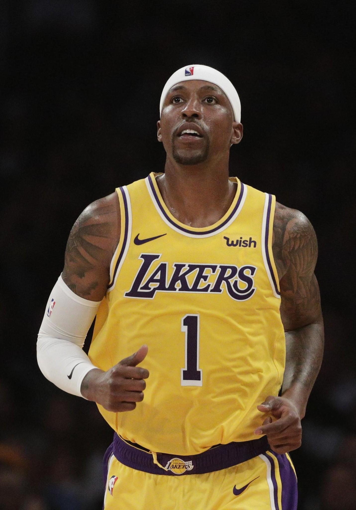
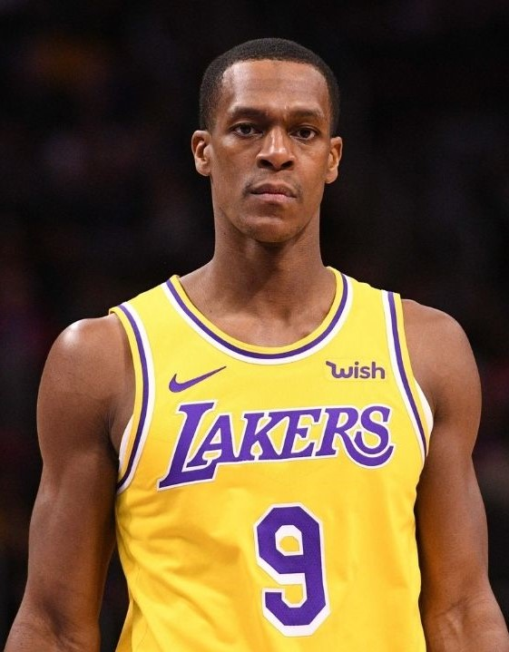
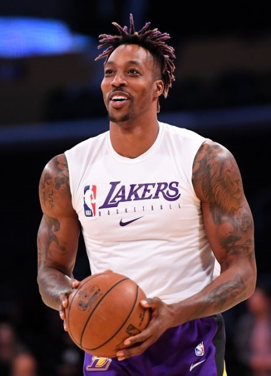

2020 Roster of the Los Angeles Lakers
Top 5 Power Rankings
1. Lebron James

Lebron is obviously the best player on this team. Even at the age of 35, he still proves that he is also
the best player in the world. He should have won mvp this season in my opinion

2. Anthony Davis

This is the first season of Anthony Davis with the Los Angels Lakers and it could not have been better.
Davis is top 5 player and one the best big man in the league and if he decides to resign with the Lakers
next season, than I will have no doubt that the lakers will repeat.

3. Kentavious Caldwell-Pope
His first 2 seasons in Los Angeles were not breathtaking, only averaging 12pts a game on team without
a star. But in 2020 post-season, he proved that he is viable option on the offensive end. Making big time
trees in the 4th quarter earned himself a well deserved 3rd place.

4. Rajon Rondo
Rajon at age 34 still showes us flashes of his Boston days. His basketball-iq is immense, because of this
Lebron can take a step back and recover while Rondo runs the offense. And he is also very clutch.

5. Dwight Howard
2-3 years ago, it was thought that Dwight would retire. The best center in the league in 2010, he went to
the Lakers to team up with with Kobe in a last assault to get a championschip. But injuries left him straded
and he eventually moved on to play with the Rockets with a young James Harden. Also in Houston things
wouldn't work out. After years of hopping from team to team he eventually fell back in Los Angeles where
he redeemed himself and became a essential roleplayer.